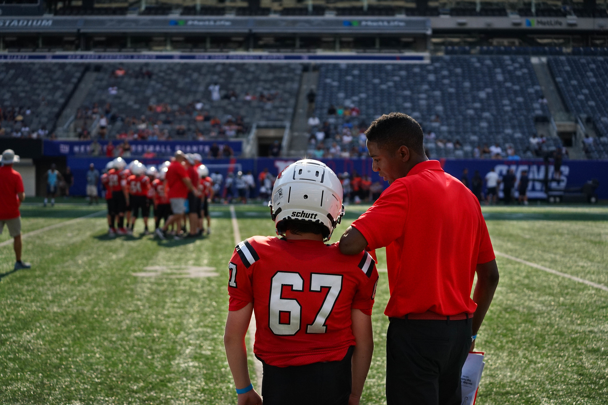
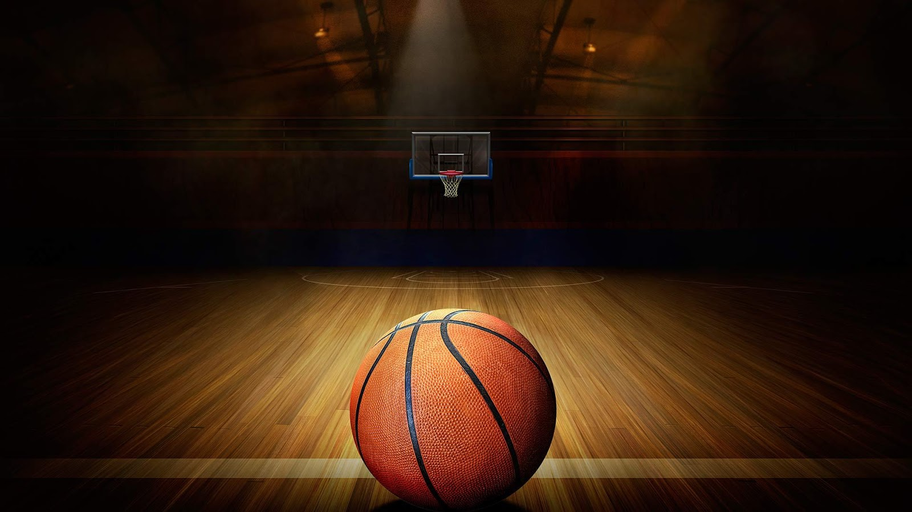

One of three colums
This is Where you can follow the seasons we are in or the past season!

1. Motivated
First and foremost, knowing what makes you step into the gym, onto the course, court, field, or track, or into the pool is key. Do results drive you? Does the sheer joy of moving move you? Are you excited to work with others towards a common goal? If you’re eager to dive into training and work hard towards achieving your goals, then you’re starting on the right foot.
2. Passionate
Be mindful of how you feel every time you step onto the training grounds or into the game. Combine your head with your heart and you’re off to an even better start.
3. Disciplined
You’ll know if you’re disciplined by the way your calendar looks. Do you notice an increase in time spent training or playing your sport? Are you willing to make short-term sacrifices for long-term goals? Can you leave life’s stresses out of practice to focus on your training and performance? The ability to be focused and disciplined are skills as important as knowing how to do a kick serve, curve ball, or ripping your entry! Get disciplined and get going!
4. Committed
Marking training sessions and games on your calendar AND showing up? It’s one thing to say you’ll do it and another thing to do it. You’re committed if you’re out there showing up with energy and drive to everything related to your sport(s).
5. Optimistic
Being optimistic as an athlete means anything related to your sport(s) excites you. Being able to stay positive on down training days, when the team loses, or mother nature rains on your game day is key when pursing athletic goals. In a way, sport can be your fill that glass that’s half-full!
one of three colums
This is my coaching page image

6. Persistent
Results don’t come in a day, an hour, or because we wish them to happen. We must work persistently at our sport and with purpose to achieve results.
7. Supportive
Remember, there is no “I” in team! Support is always valuable whether you’re in training or game mode. Remember that optimism and positivity you have for yourself? Use your motivation to motivate others!
8. Competitive
Many athlete are talented, but the ones that truly distinguish themselves are the ones that have that fire in their belly to compete and win. When you’re down do you give up or dig in and go for it? Do you thrive when challenged? Do you take every day tasks and make a competition out of their completion like I do? If so, take that competitive edge and go for the W!
9. Confident
If you believe it, you can achieve it! Sounds cheesy, we know, but it’s true. It all goes back to how important it is to believe in your skills and your power. When you’ve put in the work, been a student of the game, and mentally prepared yourself for the challenge then you’ve already scored your first few points!
10. Coachable
To be coachable is so critical as you, an athlete, have to be able to take in feedback and incorporate it best into your training or sports performance. Even professional athletes train diligently, every day, to perfect their skills, enlist professionals to teach new techniques and strategies, and endeavor to continue to learn how to be the best
one of three colums
I am a former athlete that turned into a volunteer coach & trainer for youth and high school programs. I played 3 sports growing up
Football, Basketball and my most recent one being Lacrosse (started that 9th grade) throughout my playing days. I started doing trainings
with kids from a local sports camp, which eventually lead me to coaching. That is when I started doing volunteer coaching work for the high school and youth programs in town.
I now am up to seven teams per school year. I have over 8 years experience in the sports industry, going on 9 starting in August. I am also am an influencer with promoting new objectives
or apparel on my Instagram age.